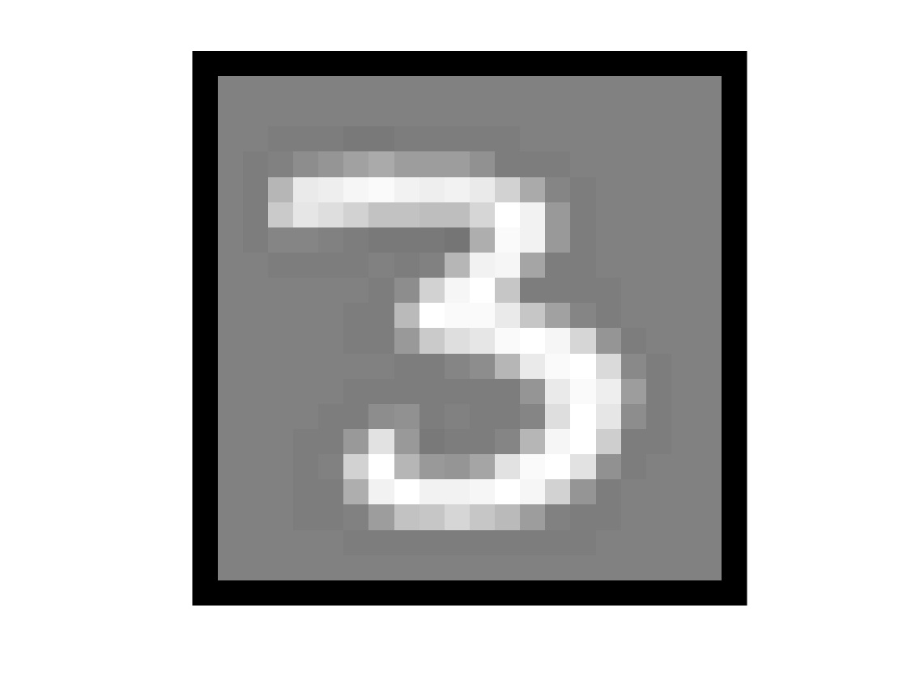
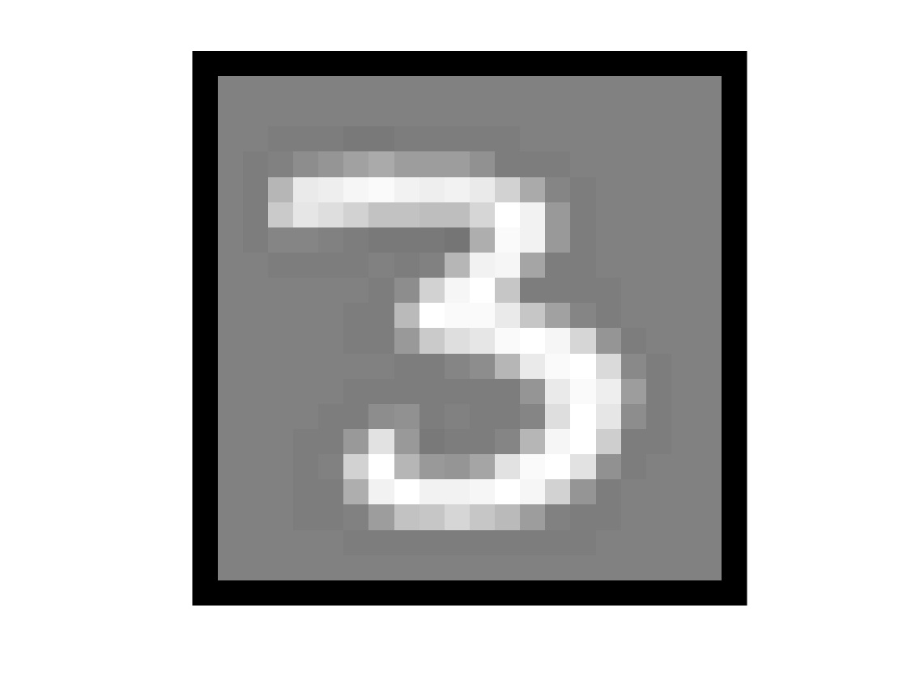
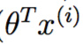
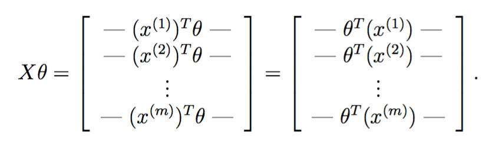
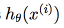

 斯坦福ML（Matlab
斯坦福ML（Matlab ）公开课，这次主题是一些图像处理的基础知识。
）公开课，这次主题是一些图像处理的基础知识。
简介
分别实现one-vs-all逻辑斯谛回归和神经网络，用来识别手写数字。其中逻辑斯谛回归是在上次练习的基础上拓展到多分类，神经网络不要求实现训练，仅要求实现前向传播然后使用预备好的参数即可。
多分类
数据集
5000张20*20像素的手写数字灰度图，每个像素被处理为一个表示灰度值的浮点数，每张图片被表示为400个浮点数并作为矩阵的一列。

以matlab内部格式储存，可直接加载：
- %% =========== Part 1: Loading and Visualizing Data =============
- % We start the exercise by first loading and visualizing the dataset.
- % You will be working with a dataset that contains handwritten digits.
- %
- % Load Training Data
- fprintf('Loading and Visualizing Data ...\n');
- load('ex3data1.mat'); % training data stored in arrays X, y
至于y，则是1-10的整数，其中为兼容matlab，10代表0。
可视化数据
显示100张图片：
- function [h, display_array] = displayData(X, example_width)
- %DISPLAYDATA Display 2D data in a nice grid
- % [h, display_array] = DISPLAYDATA(X, example_width) displays 2D data
- % stored in X in a nice grid. It returns the figure handle h and the
- % displayed array if requested.
- % Set example_width automatically if not passed in
- if ~exist('example_width', 'var') || isempty(example_width)
- example_width = round(sqrt(size(X, 2)));
- end
- % Gray Image
- colormap(gray);
- % Compute rows, cols
- [m n] = size(X);
- example_height = (n / example_width);
- % Compute number of items to display
- display_rows = floor(sqrt(m));
- display_cols = ceil(m / display_rows);
- % Between images padding
- pad = 1;
- % Setup blank display
- display_array = - ones(pad + display_rows * (example_height + pad), ...
- pad + display_cols * (example_width + pad));
- % Copy each example into a patch on the display array
- curr_ex = 1;
- for j = 1:display_rows
- for i = 1:display_cols
- if curr_ex > m,
- break;
- end
- % Copy the patch
- % Get the max value of the patch
- max_val = max(abs(X(curr_ex, :)));
- display_array(pad + (j - 1) * (example_height + pad) + (1:example_height), ...
- pad + (i - 1) * (example_width + pad) + (1:example_width)) = ...
- reshape(X(curr_ex, :), example_height, example_width) / max_val;
- curr_ex = curr_ex + 1;
- end
- if curr_ex > m,
- break;
- end
- end
- % Display Image
- h = imagesc(display_array, [-1 1]);
- % Do not show axis
- axis image off
- drawnow;
- end
colormap(gray);表示用内置的灰色主题：
h = imagesc(display_array, [-1 1]);表示array中灰度值位于±1之间，让matlab根据情况缩放到充满整个colorbar(就是上面这根把儿)。
drawnow立即刷新屏幕。
调用方法：
- m = size(X, 1);%行数
- % Randomly select 100 data points to display
- rand_indices = randperm(m);%产生1到m的整数的无重复的随机排列
- sel = X(rand_indices(1:100), :);%取前一百张
- displayData(sel);
- fprintf('Program paused. Press enter to continue.\n');
得到：
向量化逻辑斯谛回归
由于有10个分类，所以需要训练10个逻辑斯谛回归模型。为了效率，尽量不用for循环，而使用向量运算（事实上，在上次练习中，已经实现了向量化，这次权当做啰嗦吧）。
向量化损失函数
在加了正则项的逻辑斯谛回归中，损失函数定义如下：

其中

于是对每个训练实例，都需要计算。由于matlab线性代数更快，所以希望以矩阵运算代替for循环。记

把两者乘起来，得到

恰好一次性地完成了所有训练实例的运算。
梯度如下：

其实现如下：
- function [J, grad] = lrCostFunction(theta, X, y, lambda)
- %LRCOSTFUNCTION Compute cost and gradient for logistic regression with
- %regularization
- % J = LRCOSTFUNCTION(theta, X, y, lambda) computes the cost of using
- % theta as the parameter for regularized logistic regression and the
- % gradient of the cost w.r.t. to the parameters.
- % Initialize some useful values
- m = length(y); % number of training examples
- % You need to return the following variables correctly
- J = 0;
- grad = zeros(size(theta));
- % ====================== YOUR CODE HERE ======================
- % Instructions: Compute the cost of a particular choice of theta.
- % You should set J to the cost.
- % Compute the partial derivatives and set grad to the partial
- % derivatives of the cost w.r.t. each parameter in theta
- %
- % Hint: The computation of the cost function and gradients can be
- % efficiently vectorized. For example, consider the computation
- %
- % sigmoid(X * theta)
- %
- % Each row of the resulting matrix will contain the value of the
- % prediction for that example. You can make use of this to vectorize
- % the cost function and gradient computations.
- %
- % Hint: When computing the gradient of the regularized cost function,
- % there're many possible vectorized solutions, but one solution
- % looks like:
- % grad = (unregularized gradient for logistic regression)
- % temp = theta;
- % temp(1) = 0; % because we don't add anything for j = 0
- % grad = grad + YOUR_CODE_HERE (using the temp variable)
- %
- J = 1 / m * [- y' * log(sigmoid(X * theta)) ...
- - (1 - y') * log(1 - sigmoid(X * theta))] ...
- + lambda / 2 / m * (theta' * theta - theta(1) * theta(1));
- grad = 1 / m * X' * (sigmoid(X * theta) - y) ...
- + lambda / m * theta;
- grad(1) = grad(1) - lambda / m * theta(1);
- grad = grad(:);
- end
其实跟上一次练习的代码一摸一样。
最后一句
- grad = grad(:);
这种index方式的意思是，将grad矩阵reshape成一个列向量。比如：
- mat =
- 2 5 10
- 8 7 4
- >> mat(:)
- ans =
- 2
- 8
- 5
- 7
- 10
- 4
One-vs-all 分类
虽然数据里只有10分类，但要求matlab代码能够适用于任意K个类别。如果将所有参数放入到一个矩阵中，则 ，N+1是因为要加一个bias参数。
，N+1是因为要加一个bias参数。
One-vs-all预测
K个分类器分别输出属于K个类别的概率，其实现如下
- function [all_theta] = oneVsAll(X, y, num_labels, lambda)
- %ONEVSALL trains multiple logistic regression classifiers and returns all
- %the classifiers in a matrix all_theta, where the i-th row of all_theta
- %corresponds to the classifier for label i
- % [all_theta] = ONEVSALL(X, y, num_labels, lambda) trains num_labels
- % logisitc regression classifiers and returns each of these classifiers
- % in a matrix all_theta, where the i-th row of all_theta corresponds
- % to the classifier for label i
- % Some useful variables
- m = size(X, 1);
- n = size(X, 2);
- % You need to return the following variables correctly
- all_theta = zeros(num_labels, n + 1);
- % Add ones to the X data matrix
- X = [ones(m, 1) X];
- % ====================== YOUR CODE HERE ======================
- % Instructions: You should complete the following code to train num_labels
- % logistic regression classifiers with regularization
- % parameter lambda.
- %
- % Hint: theta(:) will return a column vector.
- %
- % Hint: You can use y == c to obtain a vector of 1's and 0's that tell use
- % whether the ground truth is true/false for this class.
- %
- % Note: For this assignment, we recommend using fmincg to optimize the cost
- % function. It is okay to use a for-loop (for c = 1:num_labels) to
- % loop over the different classes.
- %
- % fmincg works similarly to fminunc, but is more efficient when we
- % are dealing with large number of parameters.
- %
- % Example Code for fmincg:
- %
- % % Set Initial theta
- % initial_theta = zeros(n + 1, 1);
- %
- % % Set options for fminunc
- % options = optimset('GradObj', 'on', 'MaxIter', 50);
- %
- % % Run fmincg to obtain the optimal theta
- % % This function will return theta and the cost
- % [theta] = ...
- % fmincg (@(t)(lrCostFunction(t, X, (y == c), lambda)), ...
- % initial_theta, options);
- %
- initial_theta = zeros(n + 1, 1);
- options = optimset('GradObj', 'on', 'MaxIter', 50);
- for c = 1:num_labels
- [all_theta(c,:)] = ...
- fmincg (@(t)(lrCostFunction(t, X, (y == c), lambda)), ...
- initial_theta, options);
- end
- % =========================================================================
- end
通过循环y == c，可以将多分类转为二分类问题。一旦这么做了之后，剩下的东西就跟二分类逻辑斯谛回归一摸一样，唯一不同的是这里使用了fmincg，而不是fminunc，据说前者更高效，其具体用法参考http://www.hankcs.com/ml/programming-exercise-2-logistic-regression-cs229.html#h2-12 。
调用方法是：
- %% ================ Part 3: Predict for One-Vs-All ================
- % After ...
- pred = predictOneVsAll(all_theta, X);
- fprintf('\nTraining Set Accuracy: %f\n', mean(double(pred == y)) * 100);
最终输出accurrency=94.9%。
神经网络
在上一节中，我们实现了多分类逻辑斯谛回归模型，并且将其运用到了手写数字识别上去。但逻辑斯谛回归模型无法提供更加复杂的假设，因为它只是个线性模型，你可以像上次练习那样加入多项式特征，但训练代价过大。
网络结构
经典的三层结构：
由于数据是400维的，所以输入层有400个节点，具体实现的时候注意额外加一个输入节点供bias用。
- %% Setup the parameters you will use for this exercise
- input_layer_size = 400; % 20x20 Input Images of Digits
- hidden_layer_size = 25; % 25 hidden units
- num_labels = 10; % 10 labels, from 1 to 10
- % (note that we have mapped "0" to label 10)
前向传播和预测
实现前向传播和多分类预测，输出层输出K个类的假设函数的值，最终选取最大的 。这次练习并不急着实现训练算法，直接加载已经训练好的参数，具体代码如下：
。这次练习并不急着实现训练算法，直接加载已经训练好的参数，具体代码如下：
- %% ================ Part 2: Loading Pameters ================
- % In this part of the exercise, we load some pre-initialized
- % neural network parameters.
- fprintf('\nLoading Saved Neural Network Parameters ...\n')
- % Load the weights into variables Theta1 and Theta2
- load('ex3weights.mat');
前向传播参考http://www.hankcs.com/ml/back-propagation-neural-network.html#h3-4 ，这一层的输出乘上相应的权值加上偏置量代入激活函数等于下一层的输入。实现如下：
- function p = predict(Theta1, Theta2, X)
- %PREDICT Predict the label of an input given a trained neural network
- % p = PREDICT(Theta1, Theta2, X) outputs the predicted label of X given the
- % trained weights of a neural network (Theta1, Theta2)
- % Useful values
- m = size(X, 1);
- num_labels = size(Theta2, 1);
- % You need to return the following variables correctly
- p = zeros(size(X, 1), 1);
- % ====================== YOUR CODE HERE ======================
- % Instructions: Complete the following code to make predictions using
- % your learned neural network. You should set p to a
- % vector containing labels between 1 to num_labels.
- %
- % Hint: The max function might come in useful. In particular, the max
- % function can also return the index of the max element, for more
- % information see 'help max'. If your examples are in rows, then, you
- % can use max(A, [], 2) to obtain the max for each row.
- %
- X = [ones(m, 1) X];
- prob1 = sigmoid(X * Theta1');
- prob1 = [ones(m, 1) prob1];
- prob2 = sigmoid(prob1 * Theta2');
- [z,p] = max(prob2,[],2);
- % =========================================================================
- end
由于设有bias节点，所以X * Theta1'得到输入层的输出（就是特征）乘上（输入层->输出层的权值）不必显式地加bias，代入激活函数sigmoid得到输入层的输出prob1，作为中间层的输入。同理得到得到输出层的输入prob2，输出层不必将输入代入激活函数，其输入（也就是假设函数 的值）可直接作为衡量分类可能性大小的“分值”。
的值）可直接作为衡量分类可能性大小的“分值”。
最后的max是找出prob2行向量中最大的元素以及其下标。
M = max(A,[],dim) returns the largest elements along dimension dim. For example, if A is a matrix, then max(A,[],2) is a column vector containing the maximum value of each row.
调用方法如下：
- %% ================= Part 3: Implement Predict =================
- % After training the neural network, we would like to use it to predict
- % the labels. You will now implement the "predict" function to use the
- % neural network to predict the labels of the training set. This lets
- % you compute the training set accuracy.
- pred = predict(Theta1, Theta2, X);
- fprintf('\nTraining Set Accuracy: %f\n', mean(double(pred == y)) * 100);
最终得到
- Training Set Accuracy: 97.520000
比逻辑斯谛回归要高3个百分点。